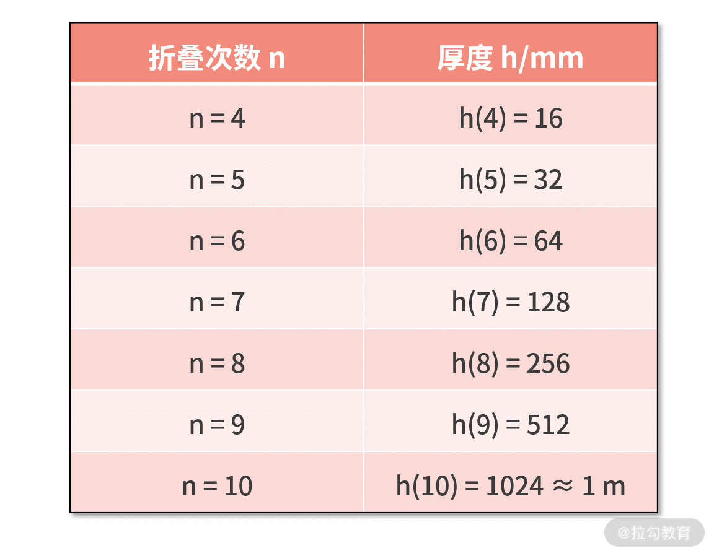
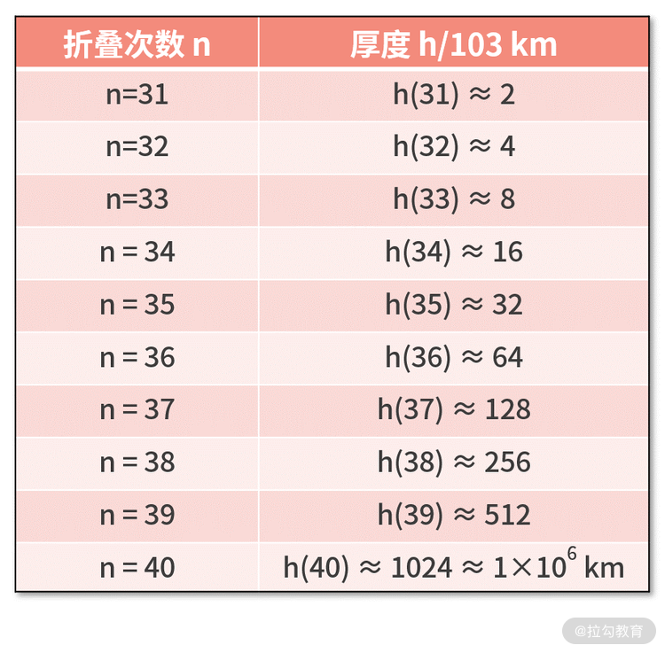
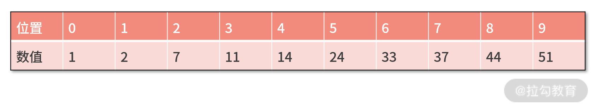
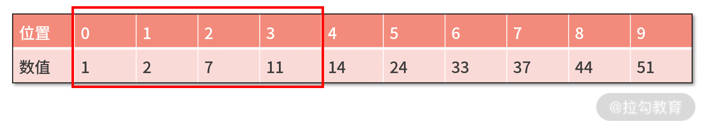

- 00 开篇词 数学，编程能力的营养根基.md.html
- 01 从计数开始，程序员必知必会的数制转换法.md.html
- 02 逻辑与沟通，怎样才能讲出有逻辑的话？.md.html
- 03 用数学决策，如何规划好投入、转化和产出？.md.html
- 04 万物可数学，经典公式是如何在生活中应用的？.md.html
- 05 求极值：如何找到复杂业务的最优解？.md.html
- 06 向量及其导数：计算机如何完成对海量高维度数据计算？.md.html
- 07 线性回归：如何在离散点中寻找数据规律？.md.html
- 08 加乘法则：如何计算复杂事件发生的概率？.md.html
- 09 似然估计：如何利用 MLE 对参数进行估计？.md.html
- 10 信息熵：事件的不确定性如何计算？.md.html
- 11 灰度实验：如何设计灰度实验并计算实验的收益？.md.html
- 12 统计学方法：如何证明灰度实验效果不是偶然得到的？.md.html
- 13 复杂度：如何利用数学推导对程序进行优化？.md.html
- 14 程序的循环：如何利用数学归纳法进行程序开发？.md.html
- 15 递归：如何计算汉诺塔问题的移动步数？.md.html
- 16 二分法：如何利用指数爆炸优化程序？.md.html
- 17 动态规划：如何利用最优子结构解决问题？.md.html
- 18 AI 入门：利用 3 个公式搭建最简 AI 框架.md.html
- 19 逻辑回归：如何让计算机做出二值化决策？.md.html
- 20 决策树：如何对 NP 难复杂问题进行启发式求解？.md.html
- 21 神经网络与深度学习：计算机是如何理解图像、文本和语音的？.md.html
- 22 面试中那些坑了无数人的算法题.md.html
- 23 站在生活的十字路口，如何用数学抉择？.md.html
- 24 结束语 数学底子好，学啥都快.md.html
- 捐赠
16 二分法：如何利用指数爆炸优化程序？
正式讲课之前，我先问你这样一个问题，请你尽可能快速回答。
一张 1 毫米厚度的纸，对折几次后，可以达到地球到月球的距离（39 万公里）？
我在写这篇稿子的时候，问了身边的几个朋友。最小的回答是 1 万次，最大的则是 100 万次。
请问在你的直觉下，你的答案又是多少呢？我猜想无论如何都是上万次吧，毕竟我们离月球有 39 万公里呢。
折纸的过程就是 1 变 2，2 变 4，4 变 8，这样一个翻一倍的过程。聪明的你，会发现其实这就是一个关于指数函数和对数函数的问题。
那么，这与我们的编程有什么关系吗？其实基于这个数学原理，编程中有一种分治法的二分策略。这一讲，我们就来讨论一下如何利用指数爆炸来优化程序。
折纸，飞奔到月球
接下来，我们定义下面的数学符号。n 为折叠的次数，h(n) 为纸张对折 n 次后的厚度。显然，每次对折纸张时，厚度都会增加一倍。
不对折时，纸张的厚度为 h(0)=1mm；每次对折纸张时，厚度都会增加一倍；如果将纸对折 1 次，则厚度为 h(1)=2mm；如果对折 2 次，则厚度为 h(2)=4mm；对折 3 次，厚度为 h(3) = 8mm。
我们耐着性子继续往下计算，可以得到下面的对折次数与厚度的关系表。  到这里我们发现，对折 10 次后，厚度也不过才刚刚达到 1 m。也许你会不仅感慨，以这样的速度，何时才能到达月球啊。
还是耐着性子，我们继续计算，并整理为下面的表格。区别是，这次我们以米（m）为单位。
 这时候，也许你会发现一些端倪。对折 10 次是 1 m，对折 20 次竟然到了 1 公里，成长速度非常快。
这时候，也许你会发现一些端倪。对折 10 次是 1 m，对折 20 次竟然到了 1 公里，成长速度非常快。
接着，我们继续耐着性子来计算，并整理为下面的表格。区别是，这次我们以千米（km）为单位。
 我们知道地球到月亮的距离是 38 公里，也就是 3.8×105km，对折 30 次后，厚度竟然已经达到了 103km。虽然离月球仍然很远，但结合这个增长速度，感觉已经快到月球了。
我们知道地球到月亮的距离是 38 公里，也就是 3.8×105km，对折 30 次后，厚度竟然已经达到了 103km。虽然离月球仍然很远，但结合这个增长速度，感觉已经快到月球了。
我们继续耐着性子来计算，并整理到下面的表格中。区别是，这次我们以 103km 为单位。  此时，你就会看到一个惊天结果。对折 40 次后，厚度达到了 106km。这已经超过了地月距离的 3.8×105km！往回看你会发现，在对折第 39 次时，厚度就已经开始超过地月距离了。原本猜测的至少要对折 10 万次，竟然只需要 39 次就到达了月球。
【飞奔到月球的代码实现】
为了仔细验证上面的结果，我们还可以把 h(n) 当作是一个数列。显然，它是一个首项为 1，公比为 2 的等比数列，它的通项公式为 h(n)=2n (mm)。
如果要计算折叠多少次厚度可达地月距离（约为 3.8×1011mm），可以对上面式子两边，同时取关于 2 的对数，则有 log22n= n = log2(3.4×1011) ≈ 38.47。
因此在第 38 次折叠时，厚度还没有到达月球；但是第 39 次对折时，纸张厚度就可以突破地月距离。
对这个问题，我们可以用以下代码实现计算：
a = 1
h = a
times = 0
while h < 380000000000:
h = h * 2
times += 1
print times
代码含义为：
- 第 1 行，定义纸张厚度为 1mm；
- 第 2、3 行，定义对折 0 次时，厚度为纸张厚度 1mm；
- 第 4 行，判断当还没有到达月球时；
- 第 5 行，执行对折的操作，厚度为原来的两倍；
- 同时第 6 行，对对折次数进行加 1 的操作。
直到达到月球后，跳出循环，并打印出到达月球的次数。

上图中的程序运行结果与刚刚我们的计算一致，都为 39 次。
指数爆炸的反向应用——二分查找
在计算机中，上面的现象也被称作“指数爆炸”。你可以理解为，某个看似不起眼的任务，每次以翻倍的速度进行增长，很快就会达到“星星之火可以燎原”的爆炸式效果和影响面。显然，指数爆炸性质的问题如果在程序中发生，会让系统迅速瘫痪。
不过，如果可以把指数爆炸的思想反过来用，就能对程序的效率进行优化。 具体而言，某个任务虽然很庞大、很复杂，但是每次我们都让这个任务的复杂性减半，那么用不了多久，这个庞大而又复杂的任务就会变成一个非常简单的任务了。
所以，指数爆炸思想的反向应用就是分治法，而分治法中的一个经典案例就是二分查找。
1.二分查找算法
二分查找是一种查找算法，用于从某个有序数组 a 中，查找目标数字 obj 出现的位置 index。
二分查找的思路是，将目标数字 obj 与数组 a 的中位数 a[median] 进行比较：
- 若相等，则查找结束；
- 如果 obj 小于 a[median]，则问题缩小为从 a 数组的左半边查找 obj；
- 如果 obj 大于 a[median]，则问题缩小为从 a 数组的右半边查找 obj。
重复这个过程，直到查找到 index，或 obj 未在数组 a 中出现为止。
我们围绕下面的例子，来使用一下二分查找算法。假设数组 a 的元素如下表所示，要查找的目标值 obj 为 7。 
第一轮，数组 a 的中位数为 a[4] = 14。因为目标值 obj 为 7，小于 14，则问题被缩小为在数组 a 的左半边查找 obj。 
第二轮，上一轮剩下的 a 数组的查找范围中，新的中位数为 a[1] = 2。因为目标值 obj 为 7，大于 2，则问题缩小为在右半边继续查找 obj。

第三轮，上一轮剩下的 a 数组的查找范围中，新的中位数为 a[2] = 7。因为目标值 obj 为 7，等于 a[2]，则说明查找到结果，输出 index 值为 2。

好了，现在我们来复盘一下刚才的执行过程。
在上面的查找过程中，每轮的查找动作都基于 obj 与中位数的大小关系，来作出保留左边或保留右边的决策。这样来看，每轮的查找动作，可以让 obj 的搜索空间减半，这也是二分查找的命名由来。
在利用二分查找后，原本 10 个元素的数组 a，只需要 3 次比较，就找到了 obj 的位置 index。你可能会决策，10 次计算缩减为 3 次，区区几微秒的时间，这对于强大的计算机而言根本不算什么。
可如果数组 a 的元素个数为 3.8×1011个，又会发生什么呢？
还记得这个数字吗？这就是刚刚我们计算的毫米单位的地月距离。
从指数爆炸的反向结论来看，对于这么多个元素的数组 a，你只需要 39 次计算就能完成对 obj 的查找。假设一次查找需要耗时 1μs，则采用二分查找后，节省的时间能达 3.8×1011μs= 3.8×108ms = 3.8×105s ≈ 100h。
2.二分查找算法的代码
不知道你有没有发现，二分查找的每一轮都是在处理同样的问题，区别只不过是数组的查找范围变小了而已。
这是不是很像上一课时讲到的递归的基本操作呢，这里的递归结构如下：
def fun(N,x):
if condition(N):
xxx
else:
fun(N1,x)
递归的两个关键问题是终止条件和递归体。
- 二分查找的终止条件有以下两个可能。第一，中位数恰好是 obj，说明找到了目标，则打印中位数的索引值 index；第二，查找完发现没有任何一个数字等于 obj，则打印 -1。
- 递归体需要做两个分支的判断。即如果 obj 比中位数大，则把数组的右半边保留，继续递归调用查找函数；如果 obj 比中位数小，则把数组的左半边保留，继续递归调用查找函数。
这样就可以得到如下代码：
def binary_search(obj,a,begin,end):
median = (begin + end) / 2
if obj == a[median]:
print median
elif begin > end:
print -1
else:
if obj > a[median]:
binary_search(obj,a,median + 1,end)
else:
binary_search(obj,a,begin,median - 1)
a = [1,2,7,11,14,24,33,37,44,51]
binary_search(7,a,0,9)
【我们对这段代码进行走读】
- 第 1 行，说明 binary_search 的入参包括查找目标 obj、数组 a、查找范围的开始索引 begin，以及查找范围的终点索引 end。
- 第 2 行，计算出查找范围内的中位数 median。
接着进行终止条件的判断：
- 第 3 行，如果 obj 和中位数相等，则直接打印 median；
- 第 5 行，如果发现开始索引比终止索引更大，则说明没有找到目标值obj，打印 -1。
第 7 行，开始是递归体：
- 第 8 行，判断 obj 和中位数的大小关系；
- 如果 obj 更大，则第 9 行递归查找数组右半边，更改开始索引为 median + 1；
- 反之，则第 11 行递归查找数组左半边，更改终止索引为 median - 1。
利用以上程序，在数组 a = [1,2,7,11,14,24,33,37,44,51] 中查找数字 7，因为 a[2] = 7，因此预期的返回结果是 2。
程序的执行结果如下图，结果也为 2，这与我们手动计算的结果是一致，结果正确。
指数爆炸和二分查找的数学基础
指数爆炸为什么那么恐怖？二分查找又为什么那么厉害？其实这都源自两个数学运算，分别是指数运算和对数运算。
1.指数运算
指数运算，即幂运算，写作 an，其中 a 为底数，n 为指数：
- 当 n 为正数时，an 表示含义为 n 个 a 相乘的积；
- 当 n 为 0 时，a0=1；
- 当 n 为负数时，an = 1/a-n；
除此以外，指数运算还有下面三个关键性质：
*a*n*∙ a*m=*a*n+m
*a*n*∙ b*n= (ab)n
(*b*n)m=*b*nm
2.对数运算
对数运算是指数运算的逆运算，设幂运算 an = y，此幂运算的逆运算为 n=logay。
其中 a 是对数运算的底，而 n 就是 y 对于底数 a 的对数。
对数有下面三个重要性质：
logb(x ∙ y) = logbx +logby
logb*x*y=*y ∙*logbx
logb1 = 0
接着，我们从计算机运行的复杂度来看一下。我们先把对数函数、线性函数、指数函数在一张图中画出来。假设对数函数和指数函数的底数选择为 2，线性函数选择为 y = x，其函数图如下所示。
 其中，灰色线为指数函数 y = 2x 的图像，橙色线为函数 y = x 的图像，蓝色线为对数函数 y = log2x 的图像，图中的这三条线，刻画了自变量 x 和因变量 y 之间的变化趋势关系，其中需要你重点关注的是指数函数和对数函数。
其中，灰色线为指数函数 y = 2x 的图像，橙色线为函数 y = x 的图像，蓝色线为对数函数 y = log2x 的图像，图中的这三条线，刻画了自变量 x 和因变量 y 之间的变化趋势关系，其中需要你重点关注的是指数函数和对数函数。
- 指数函数
对于指数函数而言，自变量 x 的增加会让因变量 y 快速达到“爆炸”状态。如果程序的复杂度与数据量是指数爆炸的趋势，那么随着数据量的增加，系统可能很快就会陷入瘫痪的状态。
现实中也有与之类比的案例。比如，人们常说的一传十、十传百就是一种指数爆炸；又比如，2020 年开始的疫情，之所以要所有人隔离，就是要避免又传染带来的指数爆炸。
- 对数函数
反之，对于对数函数而言，自变量 x 的增加对因变量 y 增加的趋势影响非常小。
程序员应该多利用这个思想来进行程序优化。例如，刚刚讲解的二分策略的程序，即使任务量很大，也可以在很少的计算时间内完成运算。
现实中也有与之类比的场景。例如，你要在一个英文词典里面查找某个单词。虽然词典的厚度可能达到成百上千页，但因为单词排列有序，你完全可以通过二分查找去找到某个单词的所在位置。同时，即使某天人们新造出很多单词，哪怕是单词数量翻倍，也不会让查单词的复杂度有明显提高。
指数爆炸的正向应用——密码学
指数爆炸的反向应用是程序的优化，而指数爆炸的正向应用就是密码学。
决定密码安全性的一个重要因素，就是密码的搜索空间 S。假设大漂亮做了个密码系统，在这个系统中，密码的每一位都由 0～9 的数字构成时。这样，密码的每一位就有 10 个可能性。
如果密码的长度为 n，则密码的搜索空间为 S = 10n。假设 n 为 5，则密码共有 105 = 1 万种可能性。要想破译密码，无异于万里挑一。
可见，要想把密码做得很复杂，一个可行的方法是，利用指数爆炸不断增加位数，来获得更大的搜索空间；除了增加密码尾数的方式外，将单个密码位上的构成可能增加也是一种提升安全性的手段。
例如，如果把每一位的密码，由先前的数字调整为数字或区分大小写的字母，则意味着密码的搜索空间由 S = 10n，提高到 S = 62n。
26 个小写字母、26 个大写字母、10 个数字，合在一起是 62 个可能性。
所以，增加每一位密码的可能性时，搜索空间 S 也可以获得提高。
小结
这一课时，我们了解了指数爆炸（运算）与对数运算，以及它们在程序和生活中的应用。而指数爆炸的思维过程就是“折纸，分奔到月球”的过程，其正向应用就是密码学。
而指数爆炸的反向应用有二分查找算法（也就是基于对数函数性质），二分查找算法是提高程序效率的重要手段，其前提条件是搜索空间有序，其实现方法需要采用上一讲所学的递归思想，需要预先定义递归的终止条件和递归体。
最后，我们留个课后习题，在上面的内容中，我们介绍了对数和指数的一些关键性质，你可以试着从数学的角度来证明这些性质的成立。
© 2019 - 2023 Liangliang Lee. Powered by gin and hexo-theme-book.